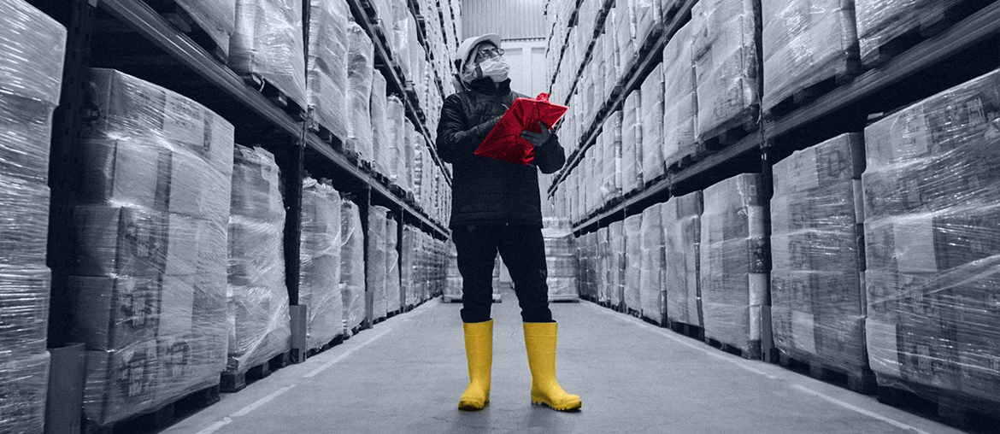

Your LWS Reflex page says one product can act as WES or integrated WCS. Start by turning that choice into a test matrix for host, conveyor, AMR, AGV, and ASRS handoffs.
Prepared for Logistex
Make Logistex warehouse integration handovers easier to prove
Saw Logistex is hiring a Head of Integration. That points to a real delivery moment: proving each automated warehouse works as sold.
SignalHead of Integration hiring
ProductLWS Reflex WES/WCS
RiskPartner systems and handover proof
OfferSix-week integration test pilot
Our read
The Head of Integration signal says delivery risk is moving upstream. The role owns system performance and contractual compliance from sale to handover. That means integration test evidence must match what was sold, not just what runs. LWS Reflex is sold as WES or WCS, with Analytex showing warehouse data. If test packs, dashboards, and partner equipment differ, handover can slow down. A small outside squad can help make this repeatable without pulling site engineers away.
Where we'd start
Analytex is framed as the continuous improvement view. Tie each handover test to the same KPI names, so clients see proof in their own operating terms.
What we'd do
Use a dedicated squad under your PM or Product Owner for a six-week pilot. Keep the scope narrow: integration tests, partner simulators, and handover evidence for LWS Reflex projects.
Tech LeadOwns architecture
2 EngineersBuild tests
QA AutomationRuns evidence
Part-time BAMaps handover
Java
.NET / C#
Python
Angular
QA automation
DevOps
Map the paths
Map current LWS Reflex handover paths, partner systems, failure modes, and evidence gaps with Engineering, Software, Projects, and Solutions Design.
Build repeatable tests
Build reusable integration tests for host data, movement commands, barcode flows, dashboards, and partner equipment simulators.
Package the proof
Add a handover evidence pack that links test results to promised performance, quality, and reliability checks.
Transfer the playbook
Run weekly demos with Paul's site team, then leave scripts and documentation ready for new projects.
Who is Elinext
Elinext is a full-cycle software development company, active since 1997. We have about 700 in-house specialists, with no freelancers or subcontractors. Teams cover Java, .NET, C#, Python, web, QA, DevOps, and AI/ML. We hold ISO 9001 and ISO 27001, and have worked with Siemens, Broadcom, Volkswagen, TRUMPF, and TUI. The model can sit under your PM or Product Owner, with weekly demos and clear handover notes. For Logistex, that means focused integration help while your engineers keep sites running.
Siemens
Broadcom
Volkswagen
TRUMPF
TUI
Proof

Continuous Microservices Development for Warehouse Management
ERP integration, barcode flows, and real-time services.
Reported 40% higher warehouse throughput.
Read case study
Voice Picking App for French WMS
Android voice workflow for warehouse parcel picking.
Used in live warehouses after delivery.
Read case study